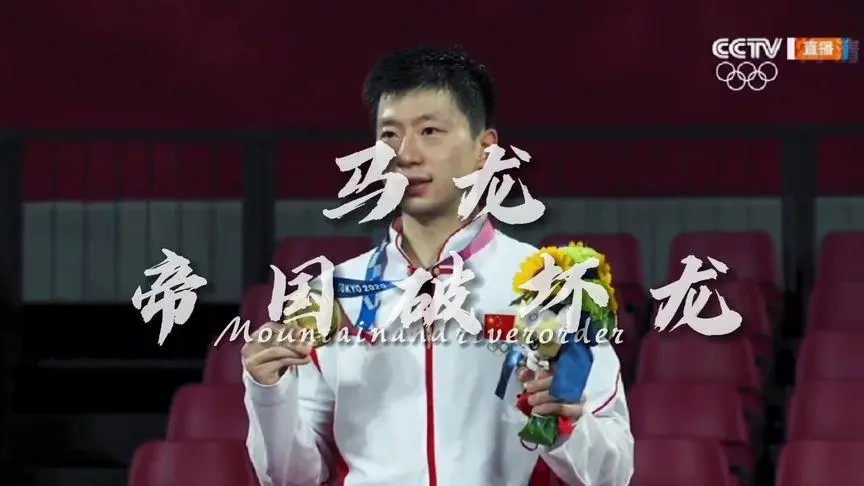

🏓乒乓对打练习🏓
作为UCAS最强的乒乓球手,你曾以为自己天下无敌,直到你碰见了……

🐉帝国の破壞龍！🐉
龙队决定给你上上强度，快来应战吧！
拍数: 0 拍
#致谢
龙队帅照取自视频https://www.ixigua.com/6990728721065837086
网页背景取自设计https://www.zcool.com.cn/work/ZMjI3NzI3NDA=.html
灵感源于小时候玩的冰球游戏，作者将其饰以乒乓球元素
编程过程中遇到的诸多难题，感谢CSDN、菜鸟教程上的解决方案